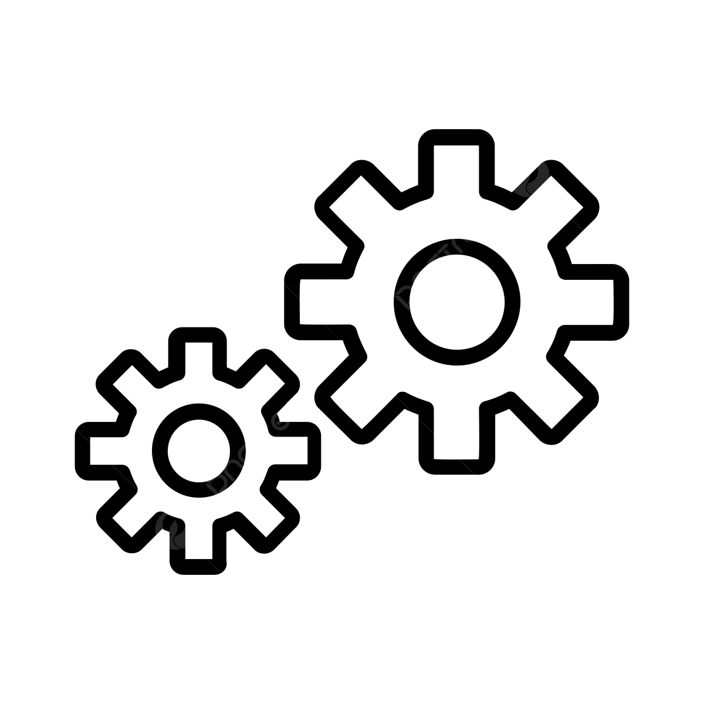

Como usar o EcoSense

1. Conecte os sensores
Clique para ver como conectar corretamente os sensores no local.
Certifique-se de que os sensores de água e gás estejam firmemente instalados nos pontos recomendados da residência. Consulte o manual para instalação correta.
2. Monitore em tempo real
Clique para ver como acompanhar o status no app.
Acesse a aba "Histórico de Vazamentos" para ver registros e receber alertas em tempo real sobre qualquer detecção de vazamento.

3. Configure alertas
Clique para personalizar notificações de vazamento.
Vá em "Configurar Notificação" para ajustar sons, tipo de aviso e prioridade dos alertas enviados pelo EcoSense.

4. Fale com o suporte
Clique para saber como receber ajuda técnica.
Se houver qualquer falha no sistema, acesse a aba "Assistência Técnica" e envie um chamado com descrição e foto, se possível.